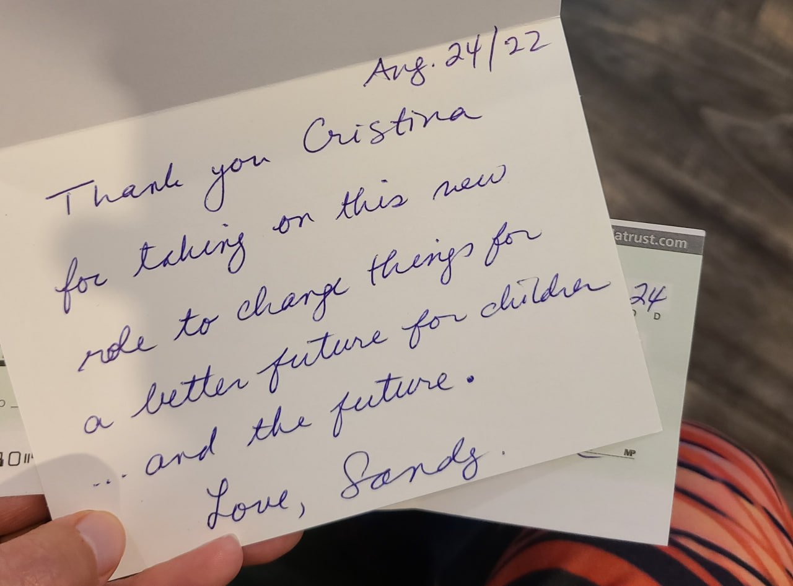
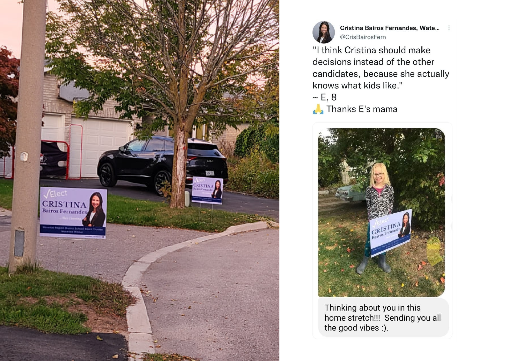
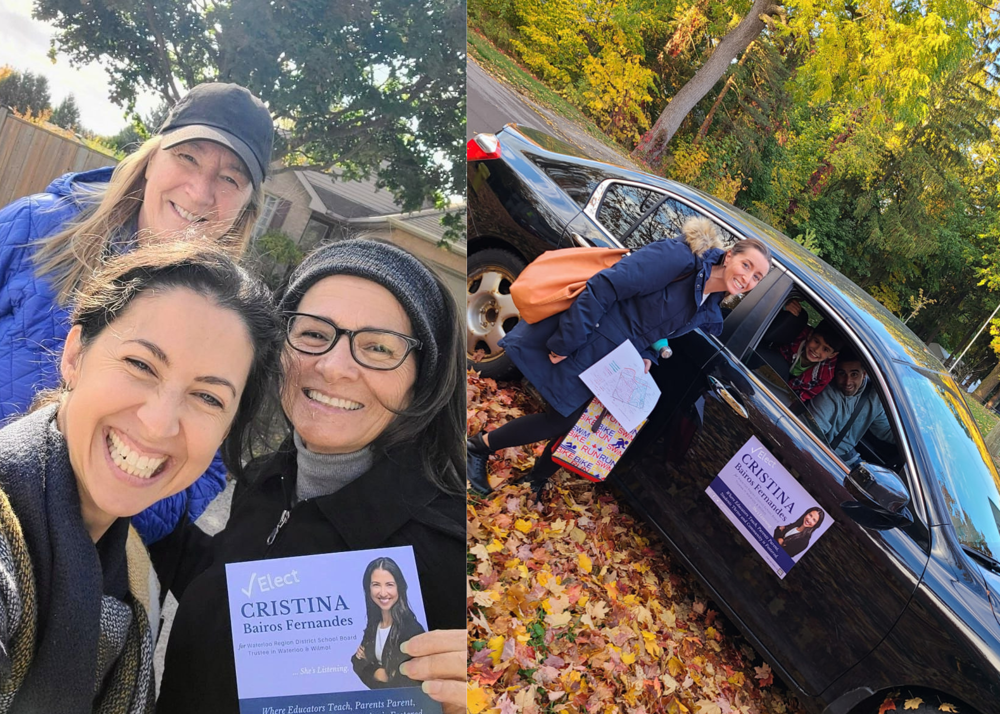
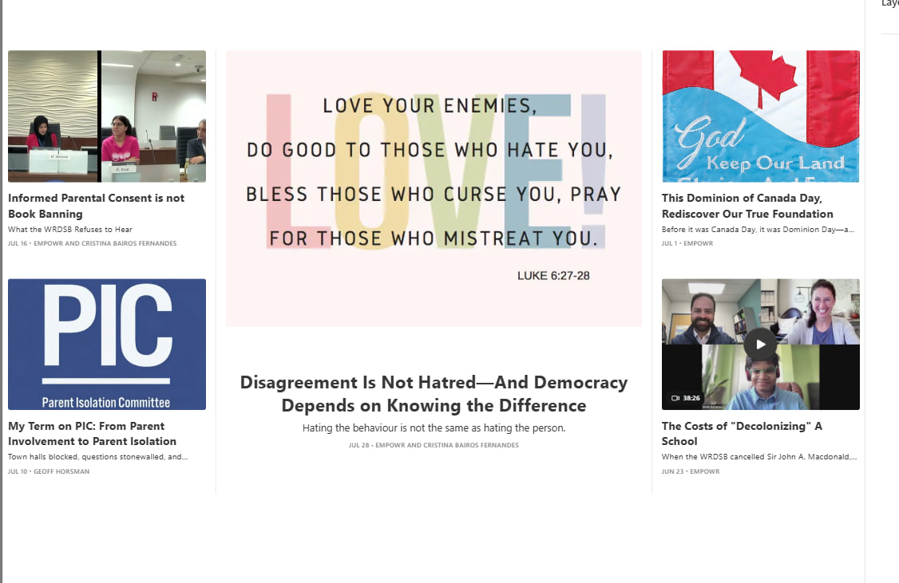

Get Involved
Campaigns are powered by people who are willing to show up in different ways.
Whether that means donating, hosting a lawn sign, volunteering, becoming informed, or sharing your feedback, every contribution helps strengthen important conversations.
Thank you for taking a moment to explore ways to support.

Donate
Your money matters. Every contribution helps this campaign reach more people. Funds raised will be used responsibly for campaign materials, lawn signs, advertising, and opportunities to connect directly with the community.
If you feel called to contribute, here are a few important things to know:
- There is no minimum donation
- The maximum contribution one person can offer to this campaign is $1,200
- Contributions of $25 or less may be made in cash.
- Contributions over $25 must be made by cheque, money order or another traceable method, such as an electronic transfer.
- Contributions of more than $100 in total will have the contributor's name and address appear on the campaign’s publicly filed financial statement.
- Municipal campaign contributions are not eligible for income tax credits.
- Contributors must be individuals who normally reside in Ontario.
- Corporate donations cannot be accepted. Individuals associated with them may contribute personally if eligible.
Financial contributions can be sent via e-transfer to cristina.BF@pm.me.
Host a Lawn Sign
I am always so humbled when someone asks to host one of my signs.
And every one of them makes a big difference! Lawn signs help neighbours recognize my name, build visibility throughout Waterloo, and show that local families and community members are engaged in this election.
Fun fact: You do not need to pay for a sign in order to host one. Drop-off and post-election pick-up can be arranged at your convenience.
If you would like to host a sign at your home, on your property or at your place of business, it would be appreciated more than you know.
I Want To Host A Sign!

Volunteer
Time is our most valuable resource — and every bit of it can make an impact. A powerful campaign is built by people willing to show up, contribute their strengths, and help others engage.
I would be honoured to have you be part of that work.
Volunteering can take many forms, and I’d love to make use of the skills, interests, and connections you already have. That might mean sharing the campaign with friends and neighbours, helping distribute information, connecting with the community, supporting events, or lending a hand behind the scenes.
There is no one right way to help. If you feel called to contribute your time or talents, we’d be grateful to have you involved.
I Want To VolunteerConnect, Share & Be Heard
Your perspective matters — and sharing it is a meaningful contribution.
Whether you fill out this questionnaire, send an email, or connect by phone, video, or in person, I want to hear what you’re seeing, experiencing, and thinking about public education.
I value honest two-way conversation, including views that challenge my own.
Join the thousands of parents, educators, students, and community members of Waterloo Region and tell me what’s working, what isn’t, and what you believe deserves attention.
I Want To Connect